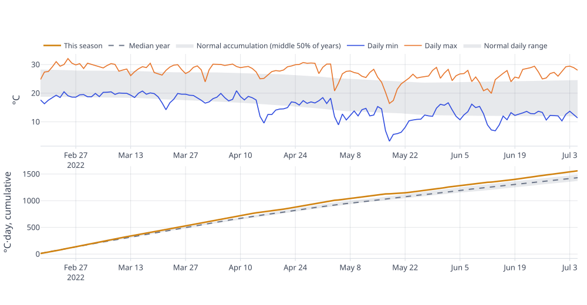
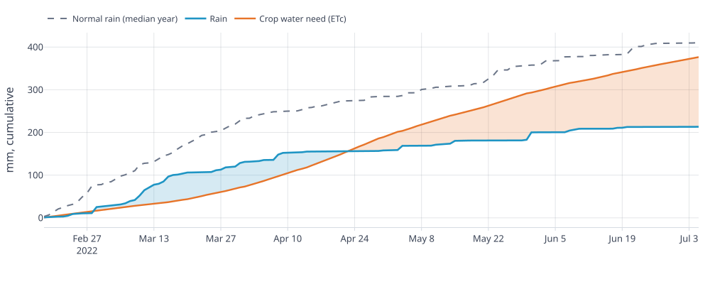
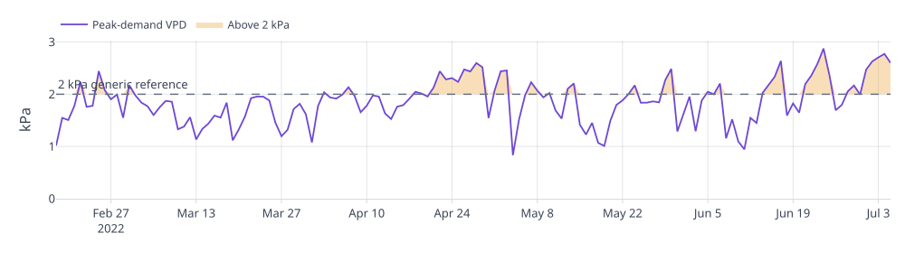
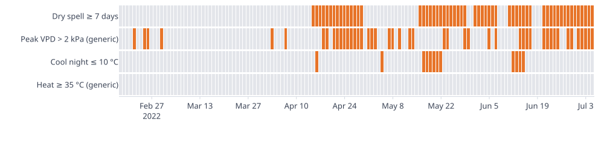
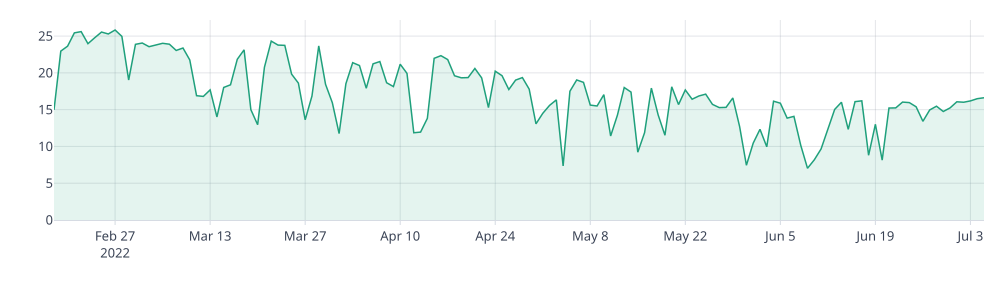
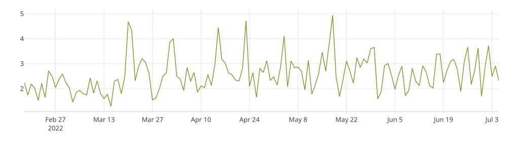

Weather report
Maize · Feb 18, 2022 – Jul 05, 2022 · 138 days · rainfed · planted 2022-02-18 · harvest 2022-07-05
Feb 18, 2022 – Jul 05, 2022
Rainfall was 213 mm, 46% below the baseline mean while average temperature ran 0.7 °C above baseline mean
Temperature and accumulated heat
Temperature sets the pace of crop development and the balance between growth and respiration. The daily extremes show the range plants lived through; growing degree-days add up the heat available for development, the thermal time agronomists use to follow a crop through its season. Heat is counted above the Maize base of 10 °C.

How to read it. Top panel: daily maximum (orange) and minimum (blue) air temperature. Bottom panel: growing degree-days, the heat above 10 °C (Maize base) added up day by day. Grey bands show 1991–2020: the normal daily range on top, and the middle half of baseline years below, with the median year as a dashed line. A season line above its band ran warmer than usual.
- Mean temperature: 20.6 °C
- Accumulated heat: 1,464 °C·day above 10 °C (Maize base)
- Normal mean temperature (1991–2020): 19.9 °C
- Normal accumulated heat (single sine): 1,449 °C·day
AId Summary. Mean temperature of 20.6 °C exceeds the 1991–2020 mean of 19.9 °C, indicating a warmer season. Accumulated heat above the maize base reached 1,464 °C·day, surpassing the normal accumulation, so thermal time progressed faster. The excess heat suggests that maize development could advance relative to a typical season, prompting the agronomist to verify whether crop phenology aligns with expected dates.
Rain and water demand
Rain is the supply side of the crop water budget and evapotranspiration the demand side. Following both through the season shows when a surplus or a shortfall built up and how early it began, which is when a rainfed crop is most exposed.

How to read it. Both lines add up from the first day of the period. The blue line is cumulative rain; the orange line is cumulative estimated crop water need (ETc), the reference demand scaled by the crop's coefficient for each stage. Blue shading marks stretches where rain was ahead of demand, orange shading where demand was ahead. The dashed line is the cumulative rain of the median season in 1991–2020.
- Total precipitation: 213.3 mm over 138 days
- Crop water need (ETc): 376.6 mm over the same days
- Rain minus crop water need: −163.3 mm (climatic balance, not soil moisture)
- Normal rain for this window (1991–2020 mean): 395 mm; this season is −46% against it
- Longest run of days under 1 mm: 15 days; 5 dry spells of at least 7 days
AId Summary. Maize crop water need for the period was 376.6 mm, while precipitation was only 213.3 mm, producing a climatic balance of −163.3 mm that indicates atmospheric demand surpassed supply. The longest consecutive dry period lasted 15 days, reinforcing that rainfall was spread over short spells rather than sustained. These conditions suggest that the crop would require supplemental irrigation to meet its evapotranspiration demand.
Atmospheric drying demand (VPD)
Vapour pressure deficit (VPD) measures how strongly dry air draws water from leaves and soil. High VPD speeds transpiration and pushes plants to close their stomata, which also limits carbon uptake: it is the atmospheric side of water stress.

How to read it. The violet line is each day's estimated peak-demand VPD, in kilopascals (kPa). The dashed line marks 2 kPa, a generic reference level; amber shading shows how far demand rose above it.
- Peak-demand VPD (estimated): mean 1.86 kPa, period maximum 2.88 kPa
- Days above the 2 kPa generic reference: 47 of 138
- 24 h mean VPD: 0.64 kPa
AId Summary. Peak‑demand VPD reached 2.88 kPa, well above the generic 2 kPa reference, and 47 of 138 days exceeded that threshold, indicating sustained high transpiration demand. The average 24‑hour VPD of 0.64 kPa suggests that most of the period was relatively moist, but repeated excursions above 2 kPa could prompt stomatal closure and elevate hydraulic risk when soil moisture is limited. These conditions may limit carbon uptake in maize, which is already sensitive to high temperatures.
Stress-event calendar
Seasonal totals can hide timing. This calendar marks every day on which a stress condition occurred, so clusters of heat, dry spells or cool nights can be lined up with the crop's sensitive stages. For Maize, the crop registry lists flowering/silking, grain filling as the stages most sensitive to heat and water.

How to read it. Each row is one condition and each column one day; an orange cell means the condition occurred that day. A dry spell is a run of at least 7 days with under 1 mm of rain.
- Dry spells of at least 7 days: 5 (58 days)
- Days with peak-demand VPD above 2 kPa (generic reference): 47
- Nights at or below 10 °C (Maize base): 12
- Days at or above 35 °C (generic reference): 0
- Coldest night 3.2 °C; hottest day 32.1 °C; frost days (Tmin < 0 °C): 0
AId Summary. Peak‑demand VPD occurred on 47 days, indicating sustained high evaporative demand. Five dry spells added low precipitation, compounding the VPD pressure. Twelve nights fell at or below the maize base temperature, reflecting cooler periods that could reduce transpiration. The combination of high VPD days and extended dry spells suggests that the crop experienced periods of elevated atmospheric demand during the season.
Appendix
Crop context — Maize
Thermal time accumulates from the planting date and stopping at the harvest date (20220705) using the sourced base 10 °C (medium confidence), upper cutoff 30 °C. Accumulated: 1,464 °C·day. It is a thermal-time indicator, not a phenological stage.
Solar radiation
Incoming solar radiation is the energy behind photosynthesis and evaporation. Cloudy spells lower both the potential for growth and the drying power of the air.

How to read it. The line is the daily all-sky shortwave radiation reaching the surface, in MJ/m² per day.
- Mean solar radiation: 17.32 MJ/m²/day (≈ 4.81 kWh/m²/day)
AId Summary. Mean solar radiation 17.32 MJ m⁻² day⁻¹ provides energy for photosynthesis and drives evapotranspiration. For maize, developmental rates are governed between 10.0 °C and 30.0 °C; thus, the radiation is available when temperatures fall within this window, allowing the crop to translate light into growth. The mean radiation likely increases evaporative demand, suggesting that irrigation scheduling should be checked to meet the elevated water requirement.
Wind speed
Wind renews the air around leaves, so it raises evaporation and transpiration and enters the reference evapotranspiration calculation. Strong wind also matters for spraying and for mechanical damage.

How to read it. The solid line is the daily mean wind speed at 10 m, in m/s.
- Mean wind speed at 10 m: 2.57 m/s
AId Summary. Wind speed of 2.57 m s⁻¹ at 10 m height represents moderate aerodynamic resistance, which elevates evaporative demand for maize by enhancing the aerodynamic term in ET₀ calculations. This sustained wind can raise transpiration demand, especially when temperatures approach the crop's upper threshold of 30 °C. Managers should consider that such wind conditions may require adjustments to irrigation timing to meet the increased water demand.
Wind direction and speed
The prevailing wind direction matters for windbreak placement, spray drift and the exposure of field edges.
How to read it. Each spoke is a compass direction the wind came from; its length is the share of days, split into speed classes from light (pale) to strong (dark).
- Dominant direction: SE
- Mean wind speed at 10 m: 2.57 m/s
- Max daily mean wind speed at 10 m: 4.94 m/s
AId Summary. Strongest winds on the day came from the southeast, consistent with the persistent SE dominance. The mean 10‑m wind speed of 2.57 m/s provides moderate air movement, while a peak of 4.94 m/s suggests occasional higher flow that could enhance evaporative demand. These conditions support routine transpiration but are below the threshold that would raise lodging risk for maize.
Environmental parameters
Notes
Warmth · Temperature and accumulated heat
- Growing degree-days use a 10 °C base and 30 °C cutoff; the report's method is hourly[3].
- The baseline comparison recomputes heat with the single-sine method for the season and every baseline year[4], so the two are comparable whichever method the report uses.
- The report's own hourly method gives 1,464 °C·day for the same season (the exported CUM_GDD).
- Thermal time measures heat available for development; it does not by itself establish crop stage or harvest timing.
- NASA POWER temperatures describe a ~0.5° grid cell and smooth local extremes[1].
Water · Rain and water demand
- Dry day = under 1 mm; dry spell = at least 7 consecutive dry days[6].
- ET0 is FAO-56 Penman–Monteith[2]; ETc = Kc × ET0 with the staged single-Kc curve[5]. FAO-56 staged single Kc: 0.30 → 1.20 → 0.60; default stage lengths scaled to supplied planting–harvest window; initial 22.08 days, development 38.64 days, mid 44.16 days, late 33.12 days. FAO-56 Table 11, maize grain, Nigeria humid, June; indicative timing only, scaled to supplied planting–harvest window, not local calibration. FAO-56 Table 12, field maize (grain), Kc end 0.60 for harvest at high grain moisture.
- Rain minus crop water need is a climatic balance, not soil moisture: it excludes soil storage, runoff, drainage, irrigation and rooting depth.
- The normal-rain line is the median of 30 seasons (1991–2020) for the same window.
- NASA POWER rainfall is a grid-cell estimate and can miss local showers; an on-farm rain gauge is the better record for a single field.
Atmospheric demand · Atmospheric drying demand (VPD)
- Peak-demand VPD pairs saturation vapour pressure at the daily maximum temperature with the day's mean vapour pressure, so it estimates the strongest demand of the day rather than measuring afternoon VPD[2].
- The 2 kPa line is a generic reference, not a crop threshold: the VPD at which stomata close is species-specific[7].
- VPD describes the atmosphere; it is not a measurement of plant water status or soil water.
Stress events · Stress-event calendar
- Event definitions follow the ETCCDI climate-extreme indices where one exists (dry days, consecutive dry days, maximum and minimum temperature)[6].
- 35 °C is a generic heat reference, not crop-specific.
- The cool-night threshold is the Maize base (10 °C).
- A near-freezing minimum does not by itself establish canopy-level frost, and a hot day does not by itself establish heat injury.
Appendix · Solar radiation
- Radiation is the all-sky value for the grid cell; it does not by itself establish photosynthetic performance.
Appendix · Wind speed
- Daily mean wind at 10 m is not a gust and does not by itself establish lodging risk; the reference evapotranspiration converts it to 2 m (FAO-56 Eq. 47).
Appendix · Wind direction and speed
- Days with a missing speed, or a direction missing or outside 0–360°, are left out of the counts, so the percentages sum to 100.
Crop context
- Missing crop information is unknown, not assumed. Cultivar, irrigation system, soil type, phenological stage and management are not inferred beyond what was supplied.
Reading this report
- Compare these values with an on-farm rain gauge: a ~0.5° grid cell can miss local showers.
- Soil water, crop stage and management are unknown to this report; it does not say how the crop responded.
- NASA POWER is a roughly 0.5° gridded product (resolution varies by variable). It smooths local extremes of rainfall and temperature and is not a substitute for a station measurement.
- Point values represent the surrounding grid cell, not necessarily conditions at the exact coordinates.